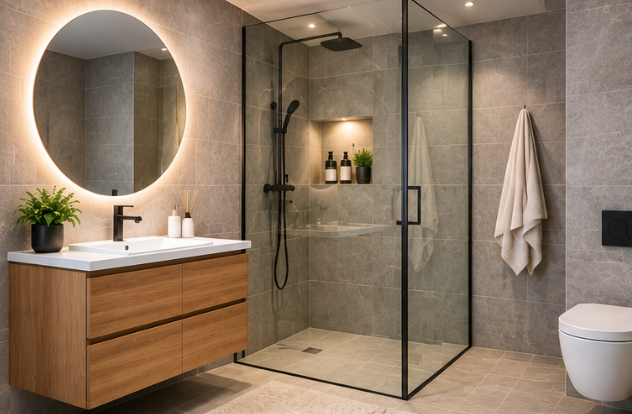

Bad og våtrom
Badet er en viktig del av boligen og kan ha behov for oppussing og vedlikehold. Her finner du informasjon om fliser, dusj, servant og annen innredning.
Tips til badet
- Planlegg oppussingen før du starter.
- Velg materialer som passer til badet.
- Undersøk kostnadene på forhånd.
- Vurder om arbeidet bør gjøres av fagfolk.
Firma: Fibo